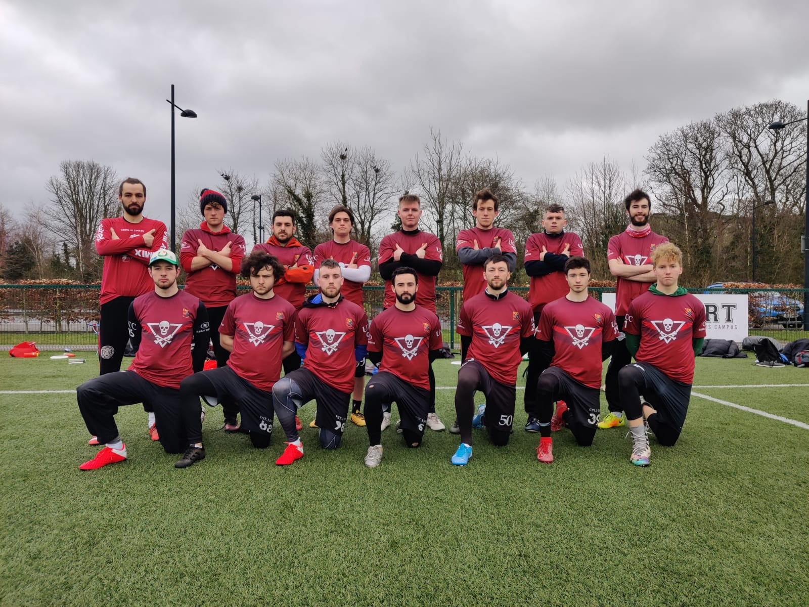
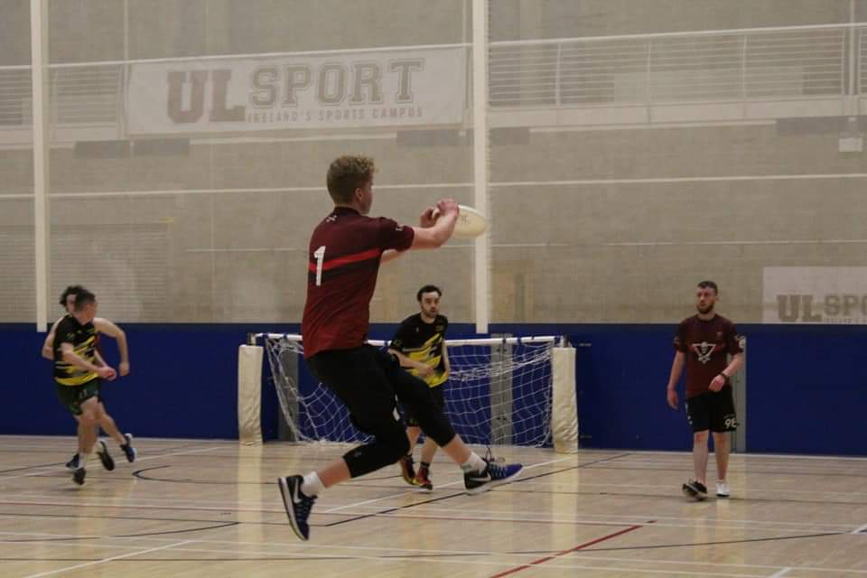
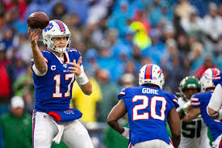
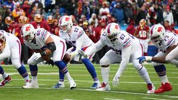

- 

- 
- 
- 
I have been playing ultimate frisbee since 2014. I took it up because I was not enjoying soccer and Gaelic Football. I immediately fell in love with the sport.
Since then I have made countless new friends, developed as a person and represented my country on three occasions (205,2016,2019). It was the best life choice I have
made. The sport keeps me fit and healthy in a fun way. I also love the social side of the sport. The gatherings and socials are immensely enjoyable. Most of all,
I love the people I play with. They make the sport what it is and I wouldn't be playing it still if it weren't for them.
I watch a lot of rugby throughout the year. I support Munster and the Irish team. When Munster are playing in Irish Independent Park in Cork, or Thomond Park
in Limerick, I try my best to go to the games. I have never been to a game abroad as much as I would love to. I have also never been to a senior Irish team game, although
I have been to a few under-20s games in Cork this past season. I love to experience the highs and the lows of the sport. I have never played rugby, but I would love
to play it someday.
I also watch the NFL season every year. I support the Buffalo Bills. A small, blue-collar team from upstate New York with a devout fan base, the Buffalo Bills have
yet to win a Superbowl even after making four in a row. The team and the fanbase have endured many hardships throughout the years. I have been following the Bills for
the past three seasons and they have made the playoffs twice in those three years. I like to think I'm a good luck charm for them. I hope to see them win the Superbowl
at least once during my lifetime.
I love to travel. I travel all over the world. In recent years I have been to The States, Poland, The UK, France, Lanzarote, Spain, Japan, and Germany. My favourite
trip was to Japan. It was a once in a lifetime experience. I visited Tokyo, Kyoto, Osaka, and Fukuoka. They were incredible cities. The atmosphere and culture were
amazing to witness. The Japanese people were incredibly generous, welcoming, and kind. I had never met such nice people before. I visited many landmarks throughout my
trip there. I took a trip to Mount Fuji, The Island Shrine of Itsukushima, and Osaka Castle. The views from Mount Fuji were spectacular and no camera could capture
the beauty of the surroundings. I would definitely go back to Japan if I was given the opportunity to do so.
My trip to The States was a close second favourite. I went to New York, Chicago, and Orlando. I learned that there is much more to see in New York other than the city,
as breathtaking as the city is. I enjoyed Orlando the most as it was sunny and had numerous beaches. Chicago is steeped in history and culture and was well worth the
visit. All three places were magnificent and are worthy of a return trip.
I have also been around Europe and have thoroughly enjoyed every trip as different as each of them was. I visited France and Lanzarote with my family, The UK and Poland
were for Ultimate Frisbee competitions, and Spain and Germany were trips with my friends. I loved certain trips for the sun and relaxation, others for the sightseeing, and
others for their high intensity sports. I would go back and visit any of them in a heartbeat.